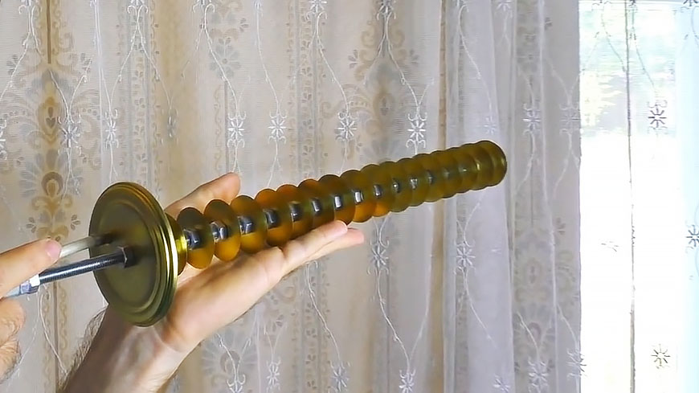

Мої захоплення
Люблю музику. З літа 2021 року працюю в McLaut настрійщиком південно-західного району м. Черкаси
Цікавлюсь новинками світу інформаційних технологій.
В період карантину і дистанційного навчання склав Wi-Fi антену, для переприйому інтернету з віддалених точок в радіусі 1 кілометру.